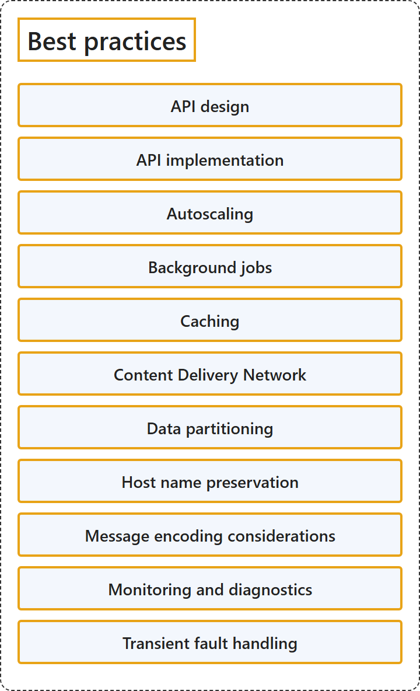

27.2 Best Practices
Classification

Glossary
| Term | Definition | 中文翻译 | Source |
|---|---|---|---|
| API design API 设计 |
"Design web APIs to support platform independence by using standard protocols and agreed-upon data formats." | 设计 Web API，支持平台独立性，方法是使用标准协议和商定的数据格式。 | Microsoft, 2026, "Practice" table, row 1 |
| API implementation API 实现 |
"Implement RESTful web APIs with HTTP method semantics, request validation, and safe retry behavior." | 实现 RESTful Web API，具备 HTTP 方法语义、请求验证和安全的重试行为。 | Microsoft, 2026, "Practice" table, row 2 |
| Autoscaling 自动缩放 |
"Design apps to dynamically allocate and deallocate resources to satisfy performance requirements and minimize costs." | 设计应用以动态分配和释放资源，从而满足性能要求并尽量降低成本。 | Microsoft, 2026, "Practice" table, row 3 |
| Background jobs 后台作业 |
"Implement batch jobs, processing tasks, and workflows as background jobs." | 把批处理作业、处理任务和工作流实现为后台作业。 | Microsoft, 2026, "Practice" table, row 4 |
| Caching 缓存 |
"Improve performance by copying data to fast storage that's close to apps." | 通过把数据复制到快速存储来提高性能，这种存储靠近应用。 | Microsoft, 2026, "Practice" table, row 5 |
| Content Delivery Network 内容分发网络 |
"Use content delivery networks (CDNs) to efficiently deliver web content to users and reduce load on web apps." | 使用内容分发网络 (CDN) 高效地向用户交付 Web 内容，并减轻 Web 应用的负载。 | Microsoft, 2026, "Practice" table, row 6 |
| Data partitioning 数据分区 |
"Partition data to improve scalability, availability, and performance and to reduce contention and data storage costs." | 对数据进行分区，以提高可伸缩性、可用性和性能，并减少争用和数据存储成本。 | Microsoft, 2026, "Practice" table, row 7 |
| Host name preservation 主机名保留 |
"Learn why it's important to preserve the original HTTP host name between a reverse proxy and its back-end web application and how to implement this recommendation for the most common Azure services." | 了解为什么要保留原始 HTTP 主机名，范围是反向代理与其后端 Web 应用程序之间，以及如何在最常用的 Azure 服务中实现这项建议。 | Microsoft, 2026, "Practice" table, row 8 |
| Message encoding considerations 消息编码注意事项 |
"Choose the payload structure, encoding format, and serialization library for asynchronous messages exchanged between system components." | 选择有效负载结构、编码格式和序列化库，用于系统组件之间交换的异步消息。 | Microsoft, 2026, "Practice" table, row 9 |
| Monitoring and diagnostics 监视和诊断 |
"Track system health, usage, and performance by using a monitoring and diagnostics pipeline." | 跟踪系统运行状况、使用情况和性能，方法是使用监视和诊断管道。 | Microsoft, 2026, "Practice" table, row 10 |
| Transient fault handling 暂时性故障处理 |
"Handle transient faults caused by unavailable networks or resources." | 处理暂时性故障，这些故障由不可用的网络或资源引起。 | Microsoft, 2026, "Practice" table, row 11 |
References
- Microsoft. (2026, October 27). Best practices in cloud applications. Azure Architecture Center. https://learn.microsoft.com/en-us/azure/architecture/best-practices/index-best-practices